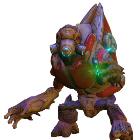
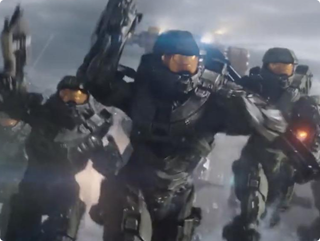
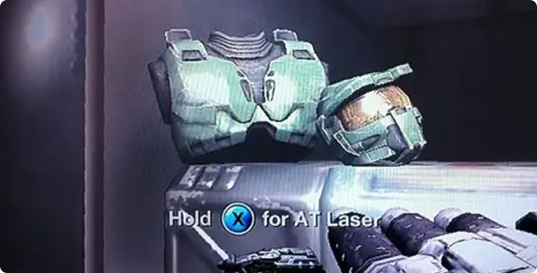
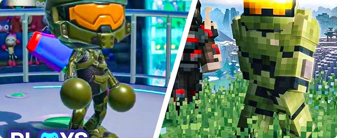
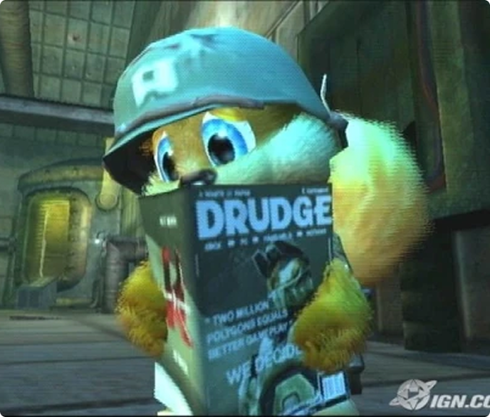
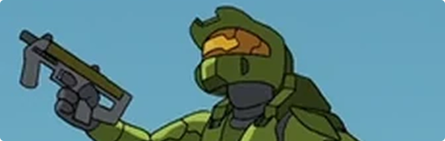

Mercancía
Conoce los productos, coleccionables y artículos inspirados en el universo de Halo.
Ver

Pocas franquicias de videojuegos han alcanzado la presencia cultural de Halo. Desde su lanzamiento, la saga de Bungie y, más tarde, de 343 Industries se ha convertido en un referente de la industria, y su iconografía, con el casco del Jefe Maestro, el Covenant y los sonidos del juego, es reconocible incluso para quienes nunca lo han jugado. Esa popularidad ha provocado que sus elementos aparezcan en productos ajenos a la saga, desde colaboraciones entre marcas y videojuegos de otras compañías hasta homenajes de creadores independientes. Algunas de estas apariciones son oficiales y pactadas entre estudios, mientras que otras son guiños de fans o referencias que han circulado en la comunidad. Esta página reúne los cameos más conocidos de la franquicia, aunque su lista es incompleta y algunos detalles deben verificarse en fuentes actualizadas antes de citarlos.


El Jefe Maestro no forma parte del plantel de Super Smash Bros., pero la saga ha sido un tema recurrente en la comunidad de crossovers y el fan art, y su casco y sus armas se han convertido en referencias habituales en juegos de otras franquicias.
Halo tiene presencia en el ecosistema de Xbox a través de vehículos icónicos, como el Warthog, y de colaboraciones dentro de juegos de Microsoft. Varios de estos guiños aparecen en títulos de conducción de la serie Forza, aunque conviene verificar qué entregas los incluyen exactamente.
Halo ha tenido presencia en Fortnite mediante skins y objetos cosméticos vinculados al Jefe Maestro, en eventos que combinaron ambas franquicias.
Existen mods, mapas y packs de texturas inspirados en Halo, además de colaboraciones oficiales de skins que llevaron elementos de la saga al juego de Mojang.


Referencias al Jefe Maestro, a armas como la Magnum o el Needler y al tema musical de Marty O'Donnell aparecen de forma recurrente en series, películas, tráilers y videojuegos independientes como homenajes.

Conoce los productos, coleccionables y artículos inspirados en el universo de Halo.
Ver
El contenido protegido por derechos de autor que pueda aparecer en este sitio, como imágenes, capturas de pantalla, ilustraciones, logotipos, fragmentos audiovisuales o referencias, se utiliza únicamente como material de apoyo, comentario, análisis, crítica, documentación o demostración de los temas tratados. La inclusión de estos materiales no pretende reclamar su propiedad ni transferir ningún derecho sobre ellos.